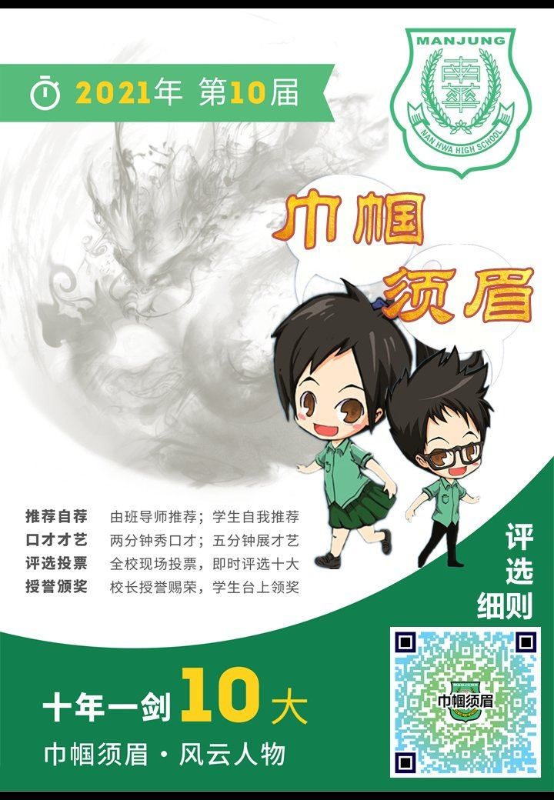

只要你考获总平均 60分以上，只要你考获班级第一名，只要你遵纪守法不犯校规，只要
只要你考获总平均 60分以上，只要你考获班级第一名，只要你遵纪守法不犯校规，只要你积极参加校内外各项活动，那恭喜你、妳、你们已经符合申请参选“南华独中 · 十大巾帼须眉奖”的资格。如果你敢说、敢秀、也乐于展现自己的才华，欢迎你站上舞台，向全校师生秀出你的卓尔不群，出类拔萃！

只要你考获总平均 60分以上，只要你考获班级第一名，只要你遵纪守法不犯校规，只要你积极参加校内外各项活动，那恭喜你、妳、你们已经符合申请参选“南华独中 · 十大巾帼须眉奖”的资格。如果你敢说、敢秀、也乐于展现自己的才华，欢迎你站上舞台，向全校师生秀出你的卓尔不群，出类拔萃！
